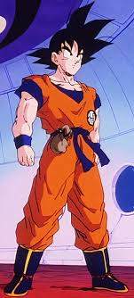
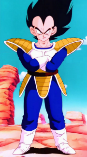
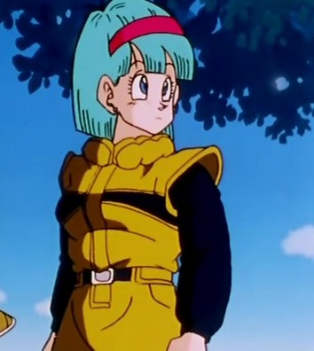
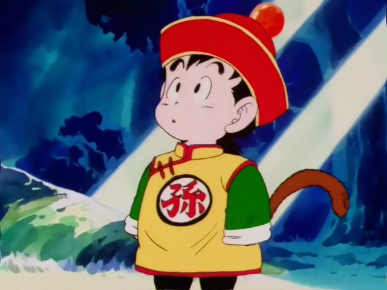

En esta parte de la serie se revela que Gokú, o Kakarotto, es un saiyajin, una raza guerrera que conquista planetas. Él llegó a la Tierra con el fin de conquistarla, pero perdió su memoria en un accidente mientras estaba a cargo de su abuelo Gohan. Gokú incrementa su poder con transformaciones llamadas Súper Saiyajin 1, Súper Saiyajin 2 y Súper Saiyajin 3.

En un principio Vegeta es un saiyajin enemigo de Gokú. Luego de que se dieran cuenta de que Gokú fracasó en su misión, Vegeta acude a la Tierra para destruirla, pero Gokú la protege. Tiempo después se vuelven amigos-rivales. Vegete alcanza los estados de Súper Saiyajin 1 y Súper Saiyajin 2.

En esta parte de la serie Bulma ayuda a sus amigos guerreros mediante sus inventos tecnológicos. Siempre está presente cuando se necesita una solución a un problema que no se puede resolver con golpes.

Ayuda a Gokú a defender la Tierra de amenzas. Aunque es un peleador guerrero, su desventaja de no tener sangre saiyajin esta muy presente en combates.

Es el primer hijo de Gokú. Desde niño siempre mostró mucho potencial como guerrero, pero prefiere estudiar para ayudar al mundo de otras maneras. En ocasiones supera a su papá, en cuestiones de poder. En esta serie alcanza el Súper Saiyajin 1 y Súper Saiyajin 2.

Hijo de un enemigo de Gokú, de raza llamada namekiana. Es la reencarnación que tendría que matar a Gokú. Con el tiempo, entrena a Gohan, con quien crea un fuerte lazo. Se vuelve amigo de todos, aunque prefiere estar alejado de los demás, entrenando.